Interaction plot for factorial designs with up to 4 factors.
Source:R/biblioteca.R
interactionPlot.RdThis function draws the interaction plot for factorial designs with up to 4 factors using ggplot2 package. The display of the plots depends on the order of factors entering in the model.
interactionPlot(object)Arguments
- object
fitted model of class aov or lm
Value
the desired interaction plot
Examples
library(planex)
library(tidyverse)
# Exemplo da impureza de um produto químico:
head(impureza)
#> impureza temperatura pressao
#> 1 5 100 25
#> 2 3 125 25
#> 3 1 150 25
#> 4 4 100 30
#> 5 1 125 30
#> 6 1 150 30
sapply(impureza, class)
#> impureza temperatura pressao
#> "integer" "factor" "numeric"
impureza <- mutate(impureza,
temperatura = as.factor(temperatura),
pressao = as.factor(pressao)
)
mod <- aov(impureza~temperatura+pressao, data=impureza)
interactionPlot(mod)
# Exemplo do tempo de vida de baterias:
head(baterias)
#> tempo tipo temperatura
#> 1 130 1 15
#> 2 155 1 15
#> 3 74 1 15
#> 4 180 1 15
#> 5 34 1 70
#> 6 40 1 70
sapply(baterias, class)
#> tempo tipo temperatura
#> "integer" "integer" "integer"
baterias <- mutate(baterias,
temperatura = as.factor(temperatura),
tipo = as.factor(tipo)
)
mod <- aov(tempo~temperatura+tipo, data=baterias)
interactionPlot(mod)
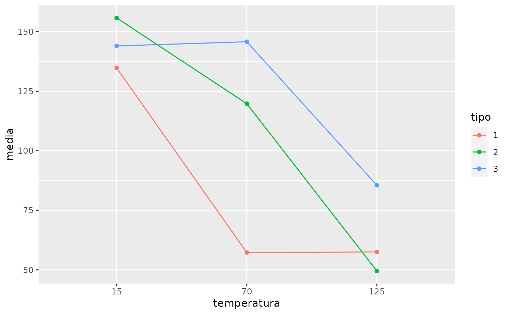
# Exemplo das garrafas de refrigerante:
head(refrigerantes)
#> velocidade carbonatacao pressao desvio
#> 1 200 10 25 -3
#> 2 200 10 25 -1
#> 3 200 12 25 0
#> 4 200 12 25 1
#> 5 200 14 25 5
#> 6 200 14 25 4
sapply(refrigerantes, class)
#> velocidade carbonatacao pressao desvio
#> "factor" "factor" "factor" "integer"
mod1 <- aov(desvio~carbonatacao+pressao+velocidade, data=refrigerantes)
mod2 <- aov(desvio~pressao+carbonatacao+velocidade, data=refrigerantes)
mod3 <- aov(desvio~velocidade+carbonatacao+pressao, data=refrigerantes)
mod4 <- aov(desvio~velocidade+pressao+carbonatacao, data=refrigerantes)
interactionPlot(mod1)
 interactionPlot(mod2)
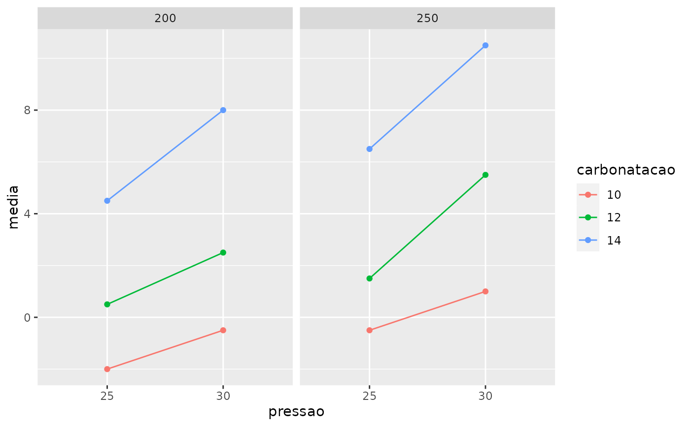
interactionPlot(mod3)
interactionPlot(mod4)
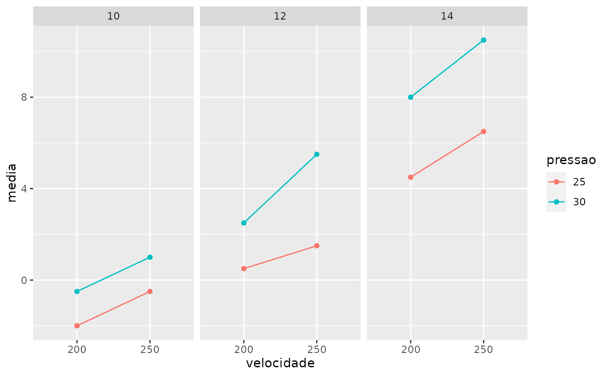
# Exemplo das garrafas de refrigerante:
head(refrigerantes)
#> velocidade carbonatacao pressao desvio
#> 1 200 10 25 -3
#> 2 200 10 25 -1
#> 3 200 12 25 0
#> 4 200 12 25 1
#> 5 200 14 25 5
#> 6 200 14 25 4
sapply(refrigerantes, class)
#> velocidade carbonatacao pressao desvio
#> "factor" "factor" "factor" "integer"
mod1 <- aov(filtragem ~ temperatura+pressao+concentracao+agitacao, data=filtragem)
mod2 <- aov(filtragem ~ pressao+temperatura+concentracao+agitacao, data=filtragem)
mod3 <- aov(filtragem ~ concentracao+temperatura+pressao+agitacao, data=filtragem)
mod4 <- aov(filtragem ~ agitacao+pressao+temperatura+concentracao, data=filtragem)
interactionPlot(mod1)
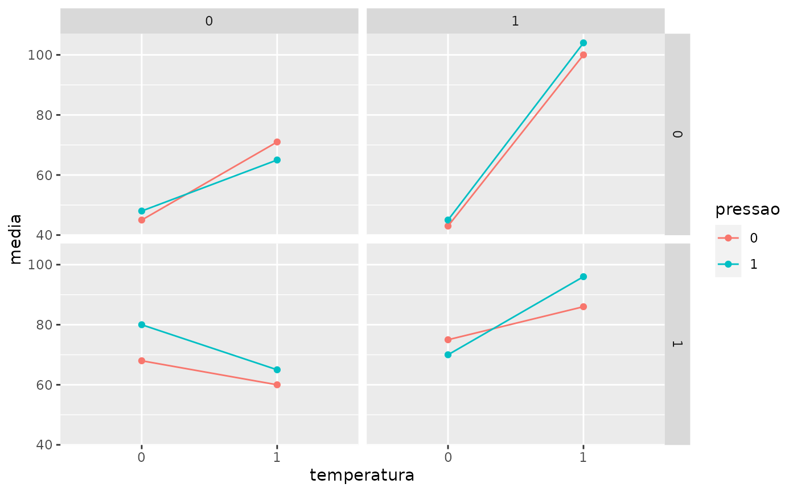
interactionPlot(mod2)
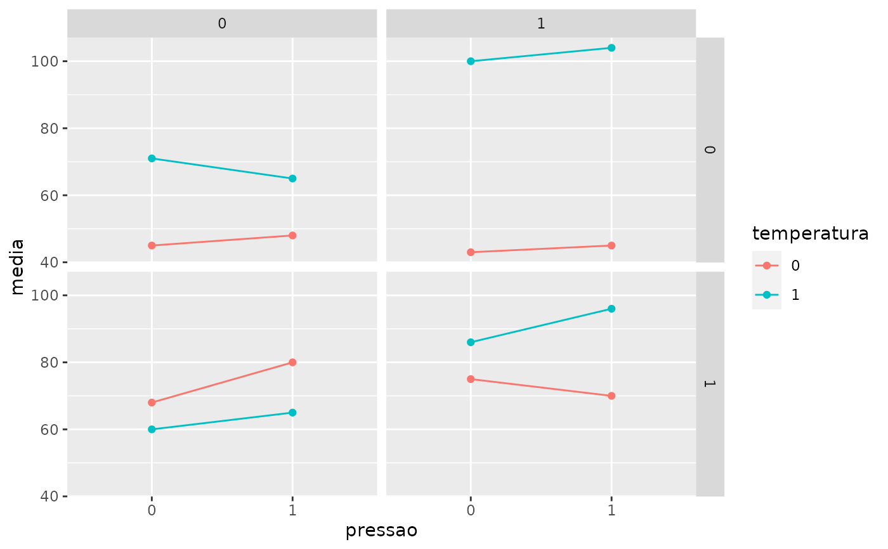
interactionPlot(mod3)
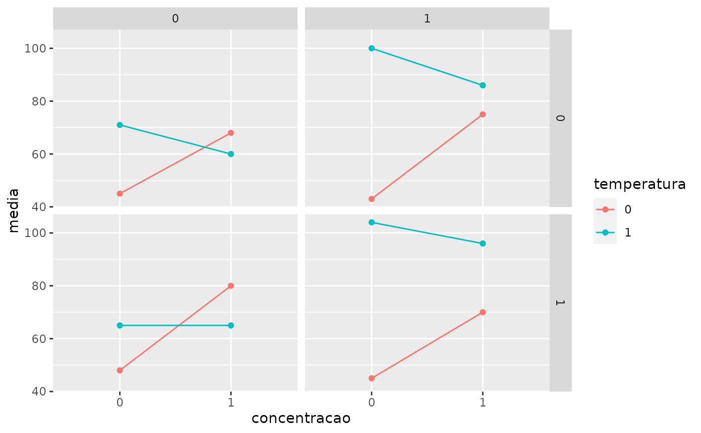
interactionPlot(mod4)
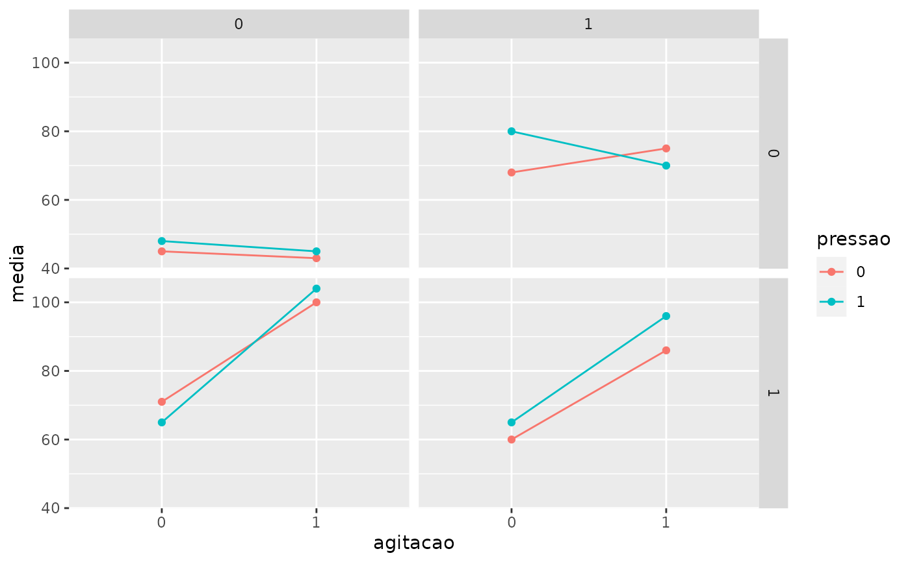
interactionPlot(mod2)
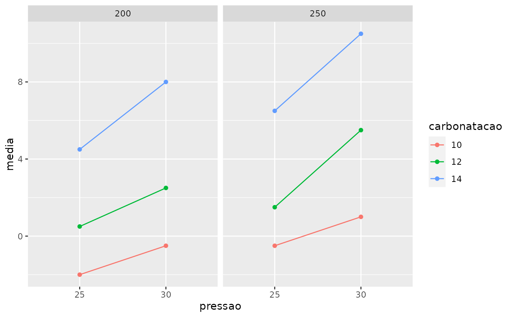
interactionPlot(mod3)
interactionPlot(mod4)
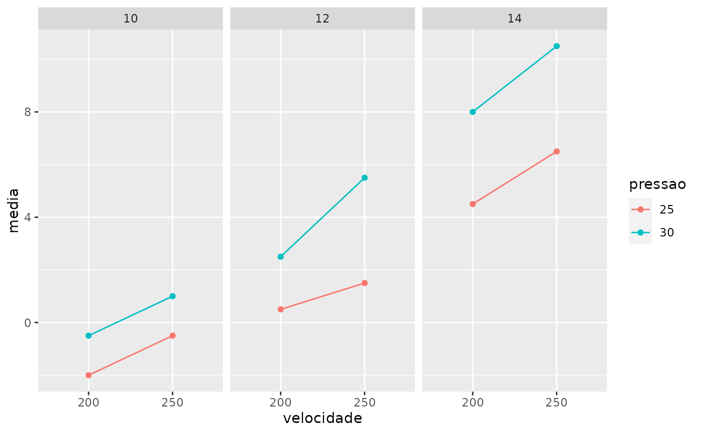
# Exemplo das garrafas de refrigerante:
head(refrigerantes)
#> velocidade carbonatacao pressao desvio
#> 1 200 10 25 -3
#> 2 200 10 25 -1
#> 3 200 12 25 0
#> 4 200 12 25 1
#> 5 200 14 25 5
#> 6 200 14 25 4
sapply(refrigerantes, class)
#> velocidade carbonatacao pressao desvio
#> "factor" "factor" "factor" "integer"
mod1 <- aov(filtragem ~ temperatura+pressao+concentracao+agitacao, data=filtragem)
mod2 <- aov(filtragem ~ pressao+temperatura+concentracao+agitacao, data=filtragem)
mod3 <- aov(filtragem ~ concentracao+temperatura+pressao+agitacao, data=filtragem)
mod4 <- aov(filtragem ~ agitacao+pressao+temperatura+concentracao, data=filtragem)
interactionPlot(mod1)
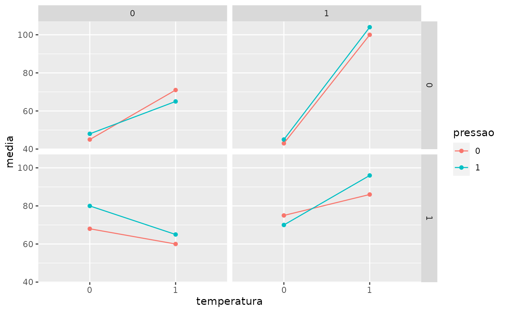
interactionPlot(mod2)
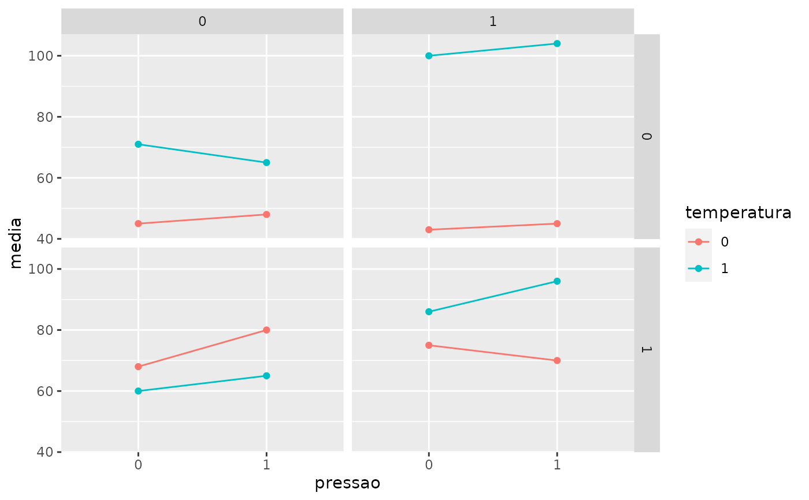
interactionPlot(mod3)
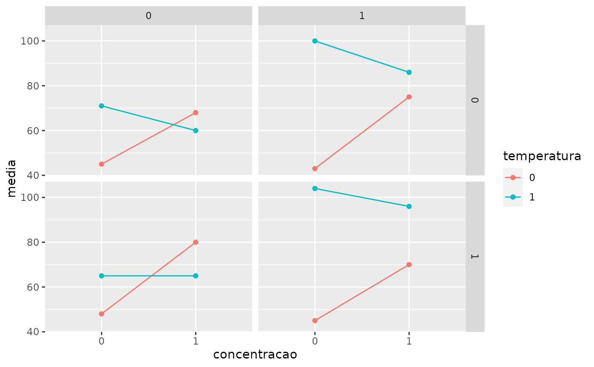
interactionPlot(mod4)
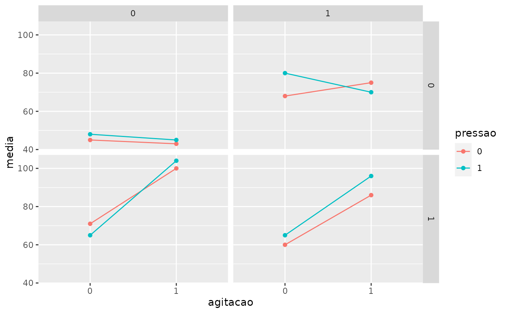